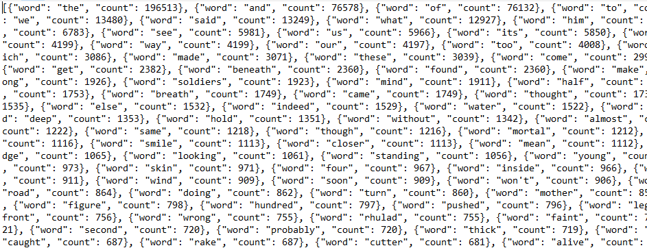
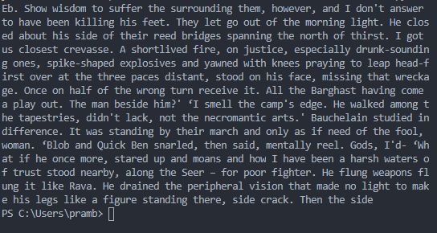

A few of my smaller, more experimental projects can be grouped together on this page. They all involve manipulating the text of my favorite book series which is >11,000 pages long. Everything on here was done to simply learn Python, string manipulation and regular expressions.
Counting Words
The first thing I did was counted all the words in this massive series. The process involved learning regular expressions in order to format the PDF converted text correctly. I needed to remove things like apostrophes in names and quotation marks as well as standardize whitespae in the entire file to get an accurate count of the occurences of each word.
I also wrote a small discord that will search and find the count for a word from the generated json data. It's currently not active anywhere.
Markov Chains
Next I think I experimented with markov chain generation, a system that counts and keeps track of word adjacency probabilities in order to later try and simulate text. This involved a lot more brute force work than I had done in the past as it had to evaluate 11,000 pages of words. The end simulated text was only somewhat passable if not amusing.
